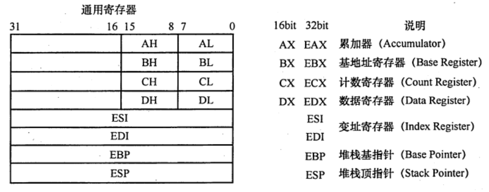

程序的机器级代码表示
2022.08.25
程序的机器级代码表示常用汇编指令介绍相关寄存器汇编指令格式常用指令过程调用的机器级表示P调用Q的步骤案例说明选择语句的机器级表示条件码（标志位）if语句switch语句循环语句的机器级表示do-while语句while语句for语句例题
常用汇编指令介绍
相关寄存器
x86处理器中有8个32位的通用寄存器，个寄存器及说明如图所示。为向后兼容，EAX、EBX、ECX、EDX的高两位字节和低两位字节可以独立使用，E为Extended，表示32位寄存器。
例如，EAX的低两位字节称为AX，而AX的高低字节可分别作为两个8位寄存器，分别称为AH和AL。
寄存器名称与大小写无关，既可以用EAX，也可以用eax。

汇编指令格式
AT&T 和Intel两种指令格式：
| 内容 | AT&T | Intel |
|---|---|---|
| 大小写 | 只能小写 | 大小写不敏感 |
| 操作数顺序 | 源，目的 | 目的，源 |
| 前缀 | %寄存器，$立即数 | 无前缀 |
| 寻址 | () | [] |
| 指定数据长度 | 操作码+“b”/“w”/“l” | 操作码+“byte str”/“word str”/“dword str” |
案例展示：
| 含义 | AT&T | Intel |
|---|---|---|
100->R[eax] | mov $100, %eax | mov eax, 100 |
R[eax]->R[ebx] | mov %eax, %ebx | mov ebx, eax |
R[eax]->M[R[ebx]] | mov %eax, (%ebx) | mov [ebx], eax |
R[eax]->M[R[ebp]-8] | mov %eax, -8(%ebp) | mov [ebp-8], eax |
R[edx]+R[eax]*2+8->R[eax] | lea 8(%edx, %eax, 2), %eax | lea eax, [edx+eax*2+8] |
长度为4字节的R[eax]->R[ebx] | movl %eax, %ebx | mov dword ptr ebx, eax |
disp(base, index, scale)：偏移量、基址寄存器、比例因子- 汇编中的lea指令的作用，简单清晰明了不废话！
常用指令
汇编指令分为数据传送指令、逻辑计算指令和控制流指令。
寄存器、内存、常数
- 寄存器
<reg>：表示任意寄存器，其后带有数字代表位数。<reg32>（eax、ebx、ecx..），<reg16>（ax、bx、..），<reg8>（ah、al、bh、bl）... - 内存地址
<mem>：表示内存地址，[eax]、[var+4]、dword ptr [eax+ebx] - 常数
con：<con8>、<con16>、<con32>
- 寄存器
数据传送指令
mov指令：把第二个操作数复制到第一个操作数那里。注意⚠️不能用于直接从内存复制到内存
xxxxxxxxxxmov <reg>, <reg>mov <reg>, <mem>mov <mem>, <reg>mov <reg>, <con>mov <mem>, <con>; 举例mov eax, ebxmov byte ptr [var], 5push指令：将操作数押入内存栈，常用语函数调用。ESP是栈顶，压栈前先将ESP值减4，然后将操作数雅茹ESP指示的地址
xxxxxxxxxxpush <reg32>push <mem>push <con32>; 举例，占中元素固定为32位push eaxpush [var] ;将var值指示的内存地址的4字节值压栈pop指令：出栈前，先将ESP指示的地址中的内容出栈，然后将ESP值加4
xxxxxxxxxxpop edipop [ebx]
算数和逻辑运算指令
add/sub指令：结果保存在第一个操作数中
xxxxxxxxxxadd <reg>, <reg>add <reg>, <mem>add <mem>, <reg>add <reg>, <con>add <mem>, <con>;sub同理inc/dec指令：自增加1，自减少1
xxxxxxxxxxinc <reg>dec <reg>inc <mem>dec <mem>imul指令：带符号整数乘法指令。【1】两个操作数：两个操作数相乘，结果保存在第一个操作数里，第一个操作数必须是寄存器。【2】三个操作数：将第二个和第三个操作数相乘，结果保存在第一个操作数里，第一个操作数必须是寄存器
xxxxxxxxxximul <reg32>, <reg32>imul <reg32>, <mum>imul <reg32>, <reg32>, <con>imul <reg32>, <mem>, <con>idiv指令：带符号整数除法。只有一个操作数，即除数！被除数为edx:eax中的内容（64位整数），操作结果有两部分：商和余数，商送到eax，余数送到edx。
xxxxxxxxxxidiv <reg32>idiv <mem>and/or/xor指令：分别是【逻辑与】【逻辑或】【逻辑异或】，结果放在第一个操作数里
xxxxxxxxxxand <reg>, <reg>or <reg>, <mem>xor <mem>, <reg>not指令：位反转指令，将操作数中的每一位反转（0变1，1变0）
xxxxxxxxxxnot <reg>not <mem>neg指令：取负指令
xxxxxxxxxxneg <reg>neg <mem>shl/shr指令：逻辑移位指令，shl位逻辑左移，shr逻辑右移，第一个操作数表示被操作，第二个操作数指示移位的位数。
xxxxxxxxxxshl <reg>, <con8>shl <mem>, <con8>shl <reg>, <cl>shl <reg>, <cl>; shr同理
控制流指令
x86处理器维持着一个指示当前指令的指令指针（IP），当一条指令执行后，此指针自动指向下一条指令。IP寄存器不能直接工作，但可以用控制流指令更新。通常用标签（label）指示程序中的指令地址，在x86汇编代码中，可在任何指令前加入标签。
jmp指令：控制IP转移到label所指示的地址（ 从label中取出执行指令 ）
xxxxxxxxxxjmp <label>jcondition指令：条件转移指令。依据CPU状态字中的一系列条件状态转移。CPU状态字中包括指示最后一个算术运算结果是否为0，运算结果是否为负数等。
xxxxxxxxxxje <label> ;jump when equaljne <label> ;jump when not equaljz <label> ;jump when last result was zerojg <label> ;jump when greater thenjge <label> ;jump when greater than or equal tojl <label> ;jump when less thanjle <label> ;jump when less than or equal tocmp/test指令：cmp指令用于比较两个操作数的值，test指令对两个操作数进行逐位与运算，这两类指令都不保存操作结构，仅根据运算结果设置CPU状态字中的条件码。
xxxxxxxxxxcmp <reg>, <reg>cmp和test指令通常和jcondition指令搭配使用，举例
xxxxxxxxxx;将var指示的主存地址的4字节内容，与10比较cpm dword ptr [var], 10;如果相等则继续顺序执行，否则跳转到loop处执行jne loop;测试eax是否为0test eax, eax;为0则置标志ZF为1，跳转到xxxx处执行jz xxxxcall/ret指令：分别用于实现子程序（过程、函数等）的调用及返回。
xxxxxxxxxxcall <label>ret
过程调用的机器级表示
P调用Q的步骤
- P将入口参数（实参）放在Q能访问到的地方
- P将返回地址存到特定的地方，然后将控制转移到Q
- Q保护P的现场（通用寄存器内容），并为自己的非静态局部变量分配空间
- 执行过程Q
- Q恢复P的现场，将返回结果放到P能访问到的地方，并释放局部变量所占空间
- Q取出返回地址，将控制转移到P
【2】是由call指令实现的，【6】是由ret指令返回到过程P。上述过程中，用户可见的寄存器数量有限，为此需要设置专门一个存储区来保存这些数据，这个存储区就是【栈】。每个过程都有自己的栈区，称为【栈帧】，帧指针寄存器EBP指示栈帧的起始位置（栈底），栈指针寄存器ESP指示栈顶，栈从高地址向低地址增长，因此当前栈帧的范围在帧指针EBP和ESP指向的区域之间。
案例说明
xxxxxxxxxxint add(int x, int y){ return x+y;}
int caller(){ int temp1 = 125; int temp2 = 80; int sum = add(temp1, temp2); return sum;}经过GCC编译后：
xxxxxxxxxxpush ebpmov ebp, espsub ebp, 24mov [ebp]-12, 125 ; temp1 = 125mov [ebp]-8, 80 ; temp2 = 80mov eax, [ebp]-8 ; R[eax]=temp2mov [esp]-4, eax ; temp2入栈mov eax, [ebp]-12 ; R[eax]=temp1mov [esp], eax ; temp1入栈call addmov [ebp]-4, eax ; add返回值送summov eax, [ebp]-4 ; sum作为caller返回值leaveret

选择语句的机器级表示
条件码（标志位）
- CF：进位位。有进位或借位时时1，否则0
- ZF：零标志。最近的操作运算结果是否为0
- SF：最近的带符号运算结果的符号。如果是负则是1，否则是0
- OF：溢出标志。
if语句
通用形式
xxxxxxxxxxif(test_expr)then_statementelseelse_statementgoto形式
xxxxxxxxxxt = test_expr;if(!t)goto false;then_statement;goto done;false:else_statementdone:案例
xxxxxxxxxxint get_cont(int *p1, int *p2){if(p1>p2)return *p2;elsereturn *p1;}xxxxxxxxxxmovl eax,[ebp+8] ; R[eax]=p1movl edx,[ebp+12] ; R[edx]=p2cmpl eax,edx ; 比较p1，p2，根据结果置标志jbe .L1 ; 如果p1≤p2movl eax, [edx] ; R[eax]=M[p2]jmp .L2 ; 无条件跳转到L2.L1:movl eax,[eax] ;R[eax]=M[p1].L2:
switch语句

循环语句的机器级表示
do-while语句
xxxxxxxxxxdo body_statement while(test_expr);xxxxxxxxxxloop: body_statement t=test_expr; if(t) goto loop;while语句
xxxxxxxxxxwhile(test_expr) body_statemnetxxxxxxxxxxt=test_expr;if(!t) goto done;do body_statement; while(test_expr);xxxxxxxxxxt=test_expr;if(!t) goto done;
loop: body_statement t = test_expr; if(t) goto loop;done:for语句
xxxxxxxxxxfor(init_expr;test_expr;update_expr) body_statmentxxxxxxxxxxinit_expr;while(test_expt){ body_statement update_expt;}xxxxxxxxxxinit_expt;t=test_expt;if(!t) goto done;loop: body_statement update_expt; t=test_expr; if(t) goto loop;done:例题
假设
R[ax]=FFE8H，R[bx]=7FE6H，执行指令addw %bx, %ax后，寄存器的内容和标志的变化为（ ）A. R[ax]=7FXEH，OF=1，SF=0，CF=0，ZF=0
B. R[bx]=7FXEH，OF=1，SF=0，CF=0，ZF=0
C. R[ax]=7FXEH，OF=0，SF=0，CF=1，ZF=0
D. R[bx]=7FXEH，OF=0，SF=0，CF=1，ZF=0
【答案】：C
假设
R[ax]=7FE6H，R[bx]=FFE8H，执行指令sub bx, ax后，寄存器的内存和个标志的变化A. R[ax]=8002H，OF=0，SF=1，CF=0，ZF=0
B. R[bx]=8002H，OF=0，SF=1，CF=0，ZF=0
C. R[ax]=8002H，OF=1，SF=1，CF=0，ZF=0
D. R[bx]=8002H，OF=1，SF=1，CF=0，ZF=0
【答案】：B
假设P为调用过程，Q为被调用过程，程序在32位x86处理器上执行，以下是C语言程序中过程调用所涉及的操作： ①过程Q保存P的现场，并为非静态局部变量分配空问 ②过程P将实参存放到Q能访问到的地方 ③过程P将返回地址存放到特定处，并转跳到Q执行 ④过程Q取出返回地址，并转跳回到过程P执行 ⑤过程Q恢复P的现场，并释放局部变量所占空间 ⑥执行过程Q的函数体
【答案】：231654
【2017 统考真题】在按字节编址的计算机M上，f1的部分源程序（阴影部分）如下。将f1中的int都改成float，可得到计算f(n)的另一个函数f2
xxxxxxxxxxint f1(unsigned n){int sum=1,power=1;for(unsigned i=0;i<=n-1;i++){power *= 2;sum += power;}return sum;}
其中，机器级代码包括行号、虚拟地址、机器指令和汇编指令
计算机M是RISC还是CISC？为什么？
【答案】：是CISC，因为指令长短不一致，不满足RICS的标准
f1的机器指令代码共占多少字节？求计算过程
【答案】：0040107F-00401020=80+15=95❌，还要加上最后ret的一个字节，答案是96B
第20条指令cmp通过i减n-1的比较。执行f1(0)的过程中，当i=0时，cmp指令执行后，借位/进位标志CF的内容是什么？要求给出计算过程
【答案】：i=0时，i=0000,0000H和n-1=FFFF,FFFFH比较。0000,0000-FFFF,FFFF= 0000,0000+0000,0000+1=0000,0001H，输出C=0，CF=C异或1=1.CF=1
第23条指令shl通过左移实现了power*2运算，在f2中能否用shl实现power*2？为什么？
【答案】：不能。因为shl把一个整数的所有有效为左移。而f2中的变量power时float型，其计其数不包含最高有效数位，但包含了阶码部分，将其作为一个整体左移不能实现乘2
【2019 统考真题】已知

其中，机器级代码包括行号、虚拟地址、机器指令和汇编指令，计算机M按字节编址，int型数据占32位，请回答下列问题：
计算f(10)需要调用函数f1多少次？执行哪条指令会递归调用f1？
【答案】：10次，16
上述代码中，哪条指令是条件转移指令？那几条指令一定会是程序跳转执行？
【答案】：条件12，一定16，20，30
根据第16行的call指令，第17行指令的虚拟地址应是多少？已知第16行的call指令采用相对寻址方式，该指令中的偏移量应是多少？已知第16行的call指令的后4字节为偏移量，M是采用大端方式还是采用小端方式？
【答案】：0040102A，-2A=1000,0000,0010,1010=1111,1111,1101,0110=FFD6->小端
f(13)=6227020800，但f(13)的返回值为1932053504，为什么两者不相等？要使f1(13)返回正确结果。如何修改f1程序？
【答案】：因为超过了int类型最大表示范围，应该换成long long int或double
【2019统考真题】对于题10，若计算机 M 的主存地址为 32位，采用分页存储管理方式，页大小为4KB，则第1行的push指令和第30行的ret 指令是否在同一页中（说明理由）？若指令Cache 有64行，采用4 路组相联映射方式，主存块大小为 64B，则32位主存地址中，哪几位表示块内地址？哪几位表示 Cache组号？哪几位表示标记(tag）信息？读取第16行的call 指令时，只可能在指令 Cache 的哪一组中命中（说明理由）？
【答案】：【再看】